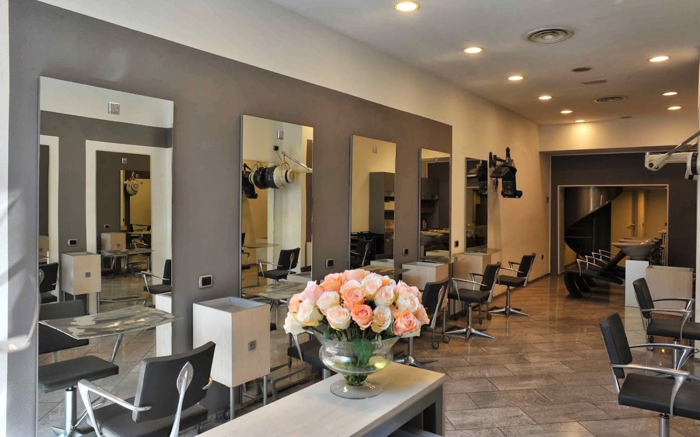
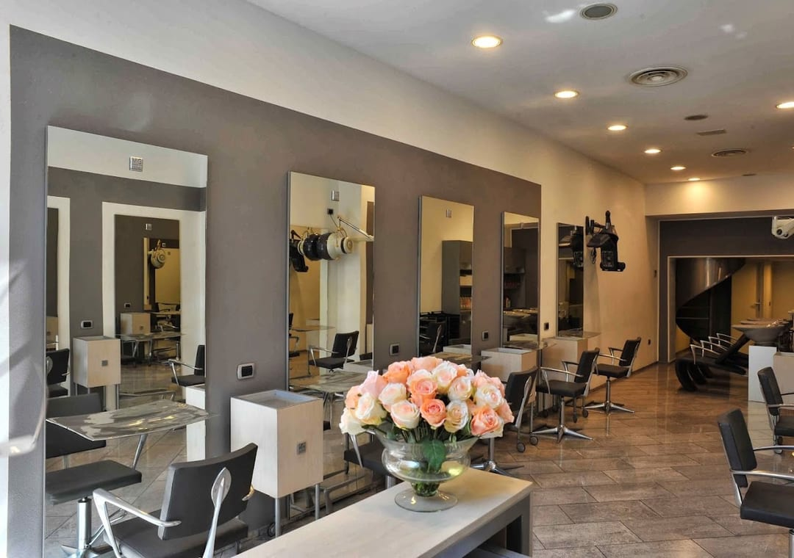
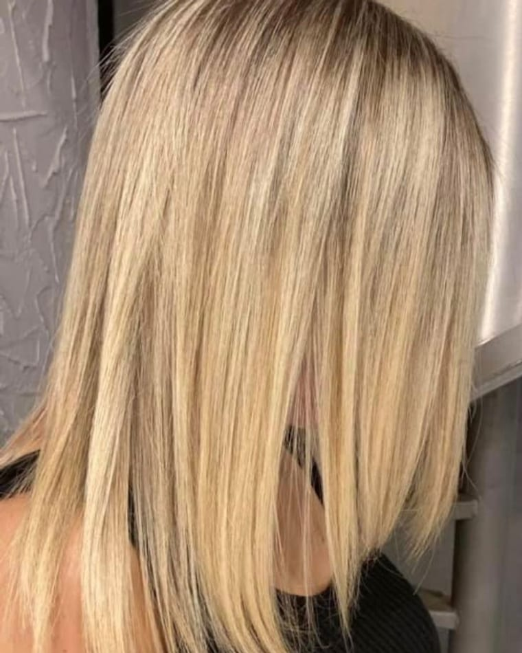
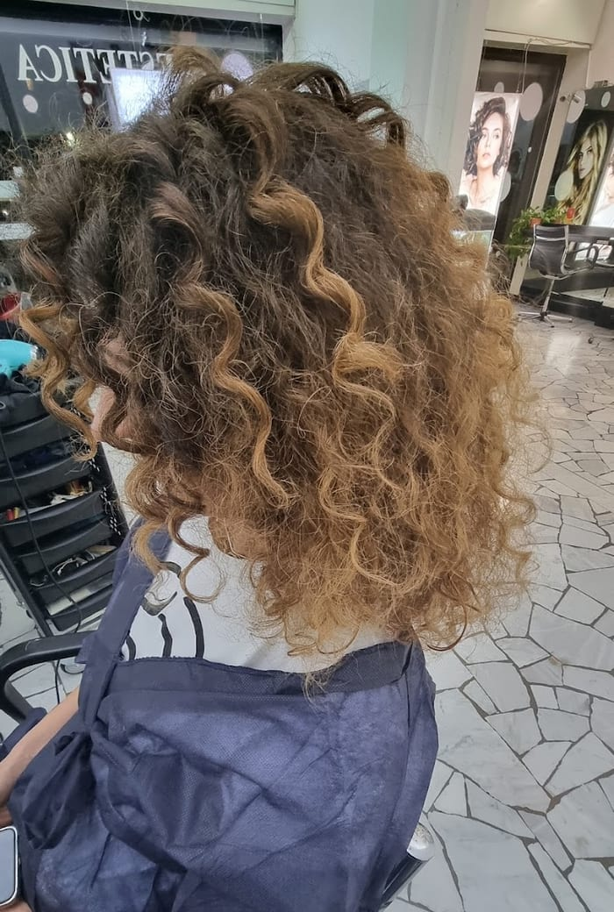
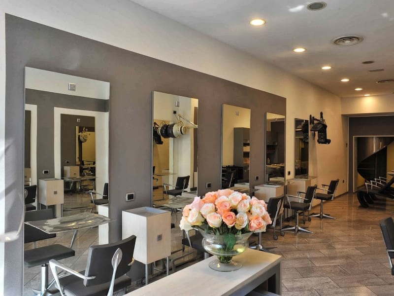
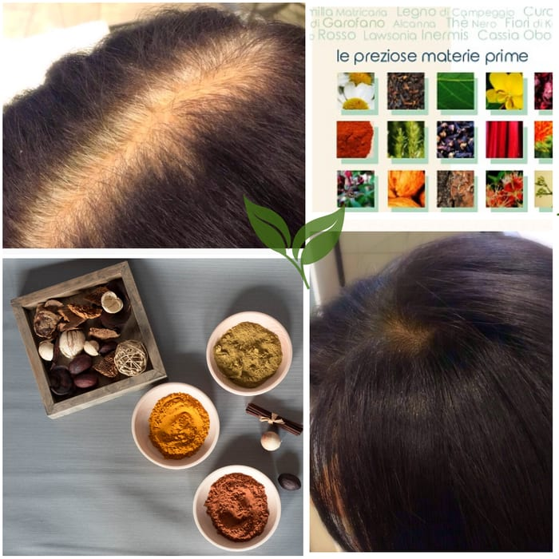

Colorazione vegetale
Il colore naturale a base di henné, indaco e cassia — delicato e luminoso.

Parrucchieri a Corso Vercelli · dal 1996
La colorazione vegetale — henné, indaco, cassia — al posto delle tinte chimiche. Delicata sui capelli, eseguita con scrupolo.
4,8 · 37 recensioni · Google
La nostra firma
Niente tinte chimiche: il colore nasce da pigmenti vegetali, «le preziose materie prime». Un colore naturale, che rispetta il capello e la cute — «eseguito con eccezionale scrupolo e competenza».
Il colore che viene dalla natura, con la delicatezza che è la nostra parola d'ordine.
Il salone
Un salone dove ci si sente accolti: delicatezza e gentilezza, competenza e un ottimo rapporto qualità/prezzo. «Un posto dove fa piacere ritornare.»
Il colore naturale a base di henné, indaco e cassia — delicato e luminoso.
Il taglio curato, «impeccabile», su misura per te.
Lavaggio, trattamento e styling, con prodotti che rispettano i capelli.


La nostra storia
Linea Italiana nasce nel 1996: il nome, creato da un gruppo di amici e colleghi, vuole sottolineare le proprie radici e la propria cultura.
Da allora, la stessa cura: la delicatezza, la competenza, il piacere di far scoprire una nuova bellezza.
«Viviamo solo per scoprire nuova bellezza. Tutto il resto è una forma d'attesa.»
I risultati



Cosa dicono
«Colorazione vegetale eseguita con eccezionale scrupolo e competenza. Di una gentilezza e professionalità ineccepibili.»
Nico B. · Google
«Delicatezza e gentilezza è la parola d'ordine. Sia chi mi ha lavato i capelli che chi ha effettuato il taglio sono stati impeccabili. Un posto dove fa piacere ritornare. Il prezzo inferiore a ciò che mi aspettavo.»
Jada · Local Guide
«Pienamente soddisfatta del risultato finale e ottimo rapporto qualità/prezzo!»
Cliente · Google
«Impeccabili e disponibili ogni volta che ci sono stata.»
Cliente · Google
Dove & orari
Via Domenico Cimarosa 3, 20144 Milano · zona Corso Vercelli / Piazzale Wagner (M1 Wagner).
—
| Lunedì | Chiuso |
|---|---|
| Martedì | 9:30 – 19:00 |
| Mercoledì | 9:30 – 19:00 |
| Giovedì | 9:30 – 19:00 |
| Venerdì | 9:30 – 19:00 |
| Sabato | 9:30 – 18:30 |
| Domenica | Chiuso |
La mappa è di Google: aprendola, Google riceve il tuo indirizzo IP e può usare i suoi cookie.
Domande frequenti
È il colore che viene dalla natura: pigmenti vegetali come henné, indaco e cassia — «le materie prime» — al posto delle tinte chimiche. Un colore delicato sui capelli e sulla cute, eseguito con scrupolo e competenza.
Colorazione vegetale, taglio e cura dei capelli, uomo e donna. Con la delicatezza e la gentilezza che sono la nostra parola d'ordine.
Linea Italiana nasce nel 1996: il nome vuole sottolineare le nostre radici e la nostra cultura.
Da martedì a venerdì 9:30–19:00; sabato 9:30–18:30. Chiuso domenica e lunedì. Meglio telefonare per un appuntamento: 02 481 2624.
In Via Domenico Cimarosa 3 a Milano, zona Corso Vercelli / Piazzale Wagner. Telefono 02 481 2624.